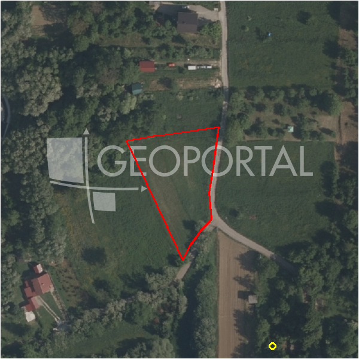

#386 · Građevinsko zemljište 2000 m2,Mikulići
Mikulići, Črnomerec, Grad Zagreb · zemljiste · njuskalo · status active · oglas ↗
Ocjena
- Score
- 55 rule 55 · LLM – · 12.09.2026.
- RLV
- 307.000 € (146 €/m²) · ratio 2,09
- Ukupna investicija
- 2,74 M€
- GBP
- 1.263 m²
- Feedback
- –
- CRM
- –
Sažetak: Prodaju se dvije spojene čestice ukupno 2.000 m² građevinskog zemljišta u Mikulićima, južna orijentacija s pogledom na grad, uz uredno vlasništvo i sve priključke uz zemljište, za 68 €/m². Na ulazu se nalazi podrum bivše drvene kuće ucrtan u katastar, a oglas ne navodi zonu ni koeficijente gradnje.
Oglas
- Cijena
- 147.000 € (70 €/m²)
- Površina
- 2.100 m² · DKP 2.105 m² (odstupanje 0,2 %)
- Prodavatelj
- agencija · Eurohome-nekretnine.hr
- Prvi put
- 10.09.2026. · zadnje 11.09.2026. · 1 d na tržištu
Povijest cijene
| Datum | Cijena |
|---|---|
| 10.09.2026. | – |
| 10.09.2026. | 147.000 € |
Flagovi
zona_provjeriti zona iz geokodiranja — provjeriti (−5)zone_uncertainty zona nije pregledana (reviewed: false) (−5)
kuca_za_rusenje kuća za rušenje
rusenje_procjena površina objekta za rušenje pretpostavljena
llm_pending LLM ekstrakcija/ocjena nedostupna
Komponente score-a
| rlv | {'gbp': 1262.886, 'kis': 0.6, 'nkp': 1035.5665199999999, 'noi': None, 'rlv': 307363.5161321743, 'ratio': 2.0909082730079884, 'value': None, 'phases': 1, 'profile': 'zagreb_visestambeno', 'gdv_neto': 3479503.5072, 'cost_soft': 83710.476, 'gdv_bruto': 4349379.384, 'kis_known': False, 'total_inv': 2743630.326, 'cost_build': 2092761.9, 'cost_other': 411337.95, 'cost_sales': 130481.38151999998, 'demolition': True, 'gbp_source': 'kis', 'rlv_per_m2': 146.02910292718786, 'parcel_area': 2104.81, 'parcelation': False, 'roi_on_cost': 0.22065356033683092, 'profit_at_ask': 605391.79968, 'cost_demolition': 9000.0, 'total_inv_phase': 2743630.326, 'parcel_area_effective': 2104.81, 'sale_price_per_m2_nkp': 4200.0} |
| hard | [] |
| info | ['kuca_za_rusenje', 'rusenje_procjena', 'llm_pending'] |
| rubric | {'permits': {'max': 5.0, 'detail': {'permit': 'none'}, 'points': 0.0}, 'location': {'max': 15.0, 'detail': {'source': 'benchmark:seed:Črnomerec', 'sale_price_per_m2_nkp': 4200.0}, 'points': 5.0}, 'physical': {'max': 4.0, 'detail': {'slope_pct': 11.83, 'slope_points': 1.817}, 'points': 1.82}, 'liquidity': {'max': 3.0, 'detail': {'n_cuts': 0, 'points_cut': 0.0, 'points_days': 0.016666666666666666, 'seller_type': 'agencija', 'points_fresh': 0.5, 'price_cut_pct': None, 'days_on_market': 2, 'points_private': 0}, 'points': 0.52}, 'rlv_ratio': {'max': 25.0, 'detail': {'rlv': 307364, 'ratio': 2.091, 'asking_price': 147000.0}, 'points': 25.0}, 'ticket_fit': {'max': 10.0, 'detail': {'asking_price': 147000.0}, 'points': 3.96}, 'zone_quality': {'max': 8.0, 'detail': {'source': 'gis', 'zone_class': 'ostalo', 'gp_uredjeni': True}, 'points': 2.0}, 'profit_potential': {'max': 20.0, 'detail': {'roi_on_cost': 0.221, 'profit_at_ask': 605392}, 'points': 16.84}, 'price_vs_benchmark': {'max': 10.0, 'detail': {'source': 'auto:Črnomerec', 'deviation': 0.557, 'ask_eur_m2': 70, 'benchmark_eur_m2': 158.13}, 'points': 10.0}} |
| weights | {'llm': 0.4, 'rule': 0.6, 'model': 0.0} |
| penalties | {'zona_provjeriti': 5, 'zone_uncertainty': 5} |
| raw_score | 65,1 |
| rlv_notes | [] |
| flag_notes | {'max_gbp': 1263, 'total_inv': 2743630, 'zone_code': 'Z1', 'zone_class': 'ostalo', 'zone_source': 'gis', 'zone_reviewed': False, 'gis_unconfirmed': 'izvan_gp'} |
| caps_applied | [] |
GIS
- Čestica
- k.o. 335274, k.č. 2984 (pin_buffer, 0,80); k.o. 335274, k.č. 2972 (pin_buffer, 0,79); k.o. 335274, k.č. 2968 (pin_buffer, 0,78)
- Zona
- Z1 (ostalo) · NIJE pregledana
- kig / kis / katnost
- – / – / –
- GP / UPU
- uredjeni · UPU –
- Pristup / nagib
- unknown · 11,8 % (max 21,0 %)
- More
- –
- Zaštite
- Natura ne · zaštićeno ne · kulturno dobro ne
- Zgrade na čestici
- 0 %
- Match
- 0,80
Karta
Ortofoto (DOF)

RLV kalkulacija — pretpostavke
| gbp | {'value': 1262.886, 'source': 'kis'} |
| kis | {'value': 0.6, 'source': 'default_profila'} |
| soft_pct | {'value': 0.04, 'source': 'profil'} |
| nkp_ratio | {'value': 0.82, 'source': 'profil'} |
| cost_other | {'value': 411337.95, 'source': 'profil: doprinosi+uređenje po m² GBP, financiranje+rezerva % gradnje'} |
| parcel_area | {'value': 2104.81, 'source': 'dkp'} |
| asking_price | {'value': 147000.0, 'source': 'oglas'} |
| margin_on_cost | {'value': 0.15, 'source': 'profil'} |
| demolition_cost | {'value': 9000.0, 'source': 'profil × m²'} |
| existing_building_m2 | {'value': 150.0, 'source': 'pretpostavka'} |
| build_cost_per_m2_gbp | {'value': 1650.0, 'source': 'profil'} |
| sale_price_per_m2_nkp | {'value': 4200.0, 'source': 'benchmark:seed:Črnomerec'} |
| transfer_tax_and_acquisition | {'value': 0.06, 'source': 'profil'} |
Ekstrakcija iz oglasa
| permit | none |
| zone_claim | građevinsko |
| parcel_count | 2 |
| sea_row_claim | none |
| building_on_parcel | ruin |
Opis oglasa
Mikulići, građevinsko zemljište 2.000 m2 , dvije spojene čestice, iznimno lijepa lokacija, južna strana, pogled na grad, zelenilo, mir, sva infrastruktura, 68 €/m2. Svi priključci su uz zemljište, a na ulazu se nalazi podrum (bivša drvena kuća), ucrtana u katastarski plan(prilog). U prilogu je arhitektonsko riješenje mogućnosti gradnje. Vlasništvo je uredno. Za više informacija zvati kontakt: Danko mob: 091 7234 625 email: danko@eurohome-nekretnine.hr web:www.eurohome-nekretnine.hr Agencijska naknada za kupca 2%+PDV ID KOD AGENCIJE: 4789 Danko Rogić Savjetnik u prodaji Mob: 091 7234 625 Tel: 01 6231 365 E-mail: danko@eurohome-nekretnine.hr www.eurohome-nekretnine.hr